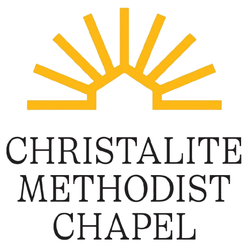
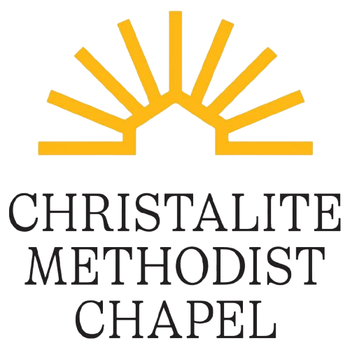
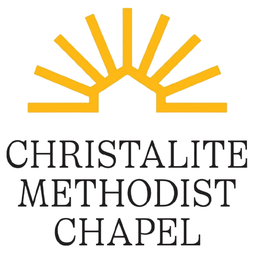

Redirecting to BB 21st Portal
Due to technical reasons, BB 21st Portal may take a while to load.
Sorry for the inconvenience.
 

Due to technical reasons, BB 21st Portal may take a while to load.
Sorry for the inconvenience.
